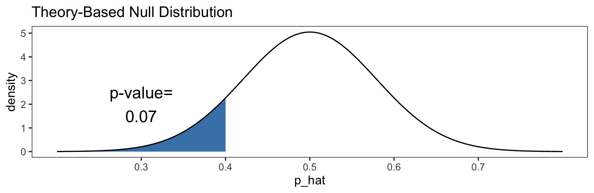

Theory Based Inference III
Megan Ayers
Stat 141 | Fall 2026
Wednesday, Week 12
Reminder
HW 8 is not due until next Friday, April 17, 11:59pm
Monday office hour adjustments for next week
Goals for today
Formalize and investigate Z-Scores
Discuss Inference for One Mean via the \(t\) distribution
Review: Inference on a Proportion
Ex: To understand proportion of Reedies who are vegetarians, we survey \(40\) students. 16 of the students are vegetarians.
- Population: All Reedies
- Parameter: \(p\) = Proportion of all Reedies who are vegetarians
- Sample: \(n=40\) Reedies we surveyed
- Statistic: \(\hat{p} = 16/40 = 0.40\)
We were able to rewrite \(\hat{p}\) as a sample mean, so by CLT with “large enough” \(n\), \[\hat p \sim \text{Normal}\Bigg(\ \text{Mean} = p, \ \text{SE} = \sqrt{\frac{p(1-p)}{n}}\ \Bigg)\] “Large Enough”: 10 or more “successes”, and 10 or more “failures”
Suppose we want to do a hypothesis test: \[H_0: p = 0.5 \ \ \ \ \ \text{vs.} \ \ \ \ \ H_a: p<0.5\]
Inference on a Proportion: Hypothesis Test
\[H_0: p = 0.5 \ \ \ \ \ \text{vs.} \ \ \ \ \ H_a: p<0.5\]
Null Distribution: We know: \[\hat p \sim \text{Normal}\Big(\ \text{Mean} = p, \ \text{SE} = \sqrt{\frac{p(1-p)}{n}}\ \Big)\]
For Null Distribution, we plug in \(p=0.5\) (i.e., the “null value”) \[\hat{p}\sim \text{Normal}\Big(\text{Mean} = \color{red}{0.5}, \text{SE}=\sqrt{\frac{\color{red}{0.5}(1-\color{red}{0.5})}{40}}\Big)\]
P-Value: \(P(\hat{p} \leq 0.4) = 0.07\)
Z-Scores
Z-Scores: Standardization
Theorem: Standardization
Suppose \(X\sim\text{Normal}(\mu,\sigma)\). Then, \(Z = \frac{X - \mu}{\sigma}\) is a Standard Normal random variable (with mean 0 and standard deviation 1).
Apply standardization to \(\hat{p}\):
\[ \hat{p} \sim \text{Normal}\big(0.5,\sqrt{0.5(1-0.5)/40}\big) \quad \rightarrow \quad \frac{\hat{p}-0.5}{\sqrt{0.5(1-0.5)/40}} \sim \underbrace{\text{Normal}\big(0,1\big)}_{Z} \]
In our sample, \(\hat{p} = 0.40\):
\[ \begin{aligned} \text{p-value} &= P\big[\hat{p} < 0.4 | H_0 \text{ is true} \big] \\ &= P \left[ \frac{\hat{p}-0.5}{\sqrt{0.5(1-0.5)/40}} < \frac{0.4-0.5}{\sqrt{0.5(1-0.5)/40}} \right] \\ &= P \left[ Z < -1.26 \right] \end{aligned} \]
- Recall that \(-1.26\) is called the Z-Score.
Visualizing Z-Scores
Null Distribution
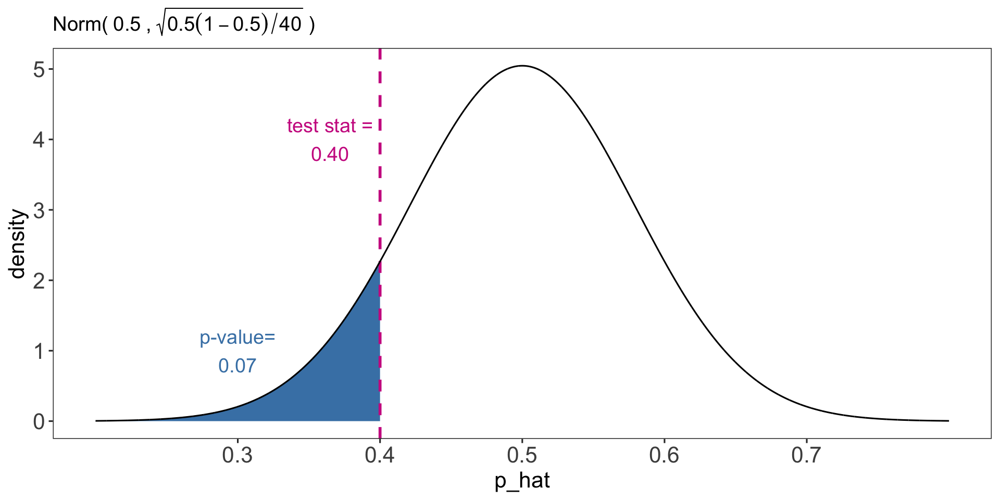
“Direct” P-Value: \(P( \hat{p} \leq 0.40)\)
Standard Normal Distribution
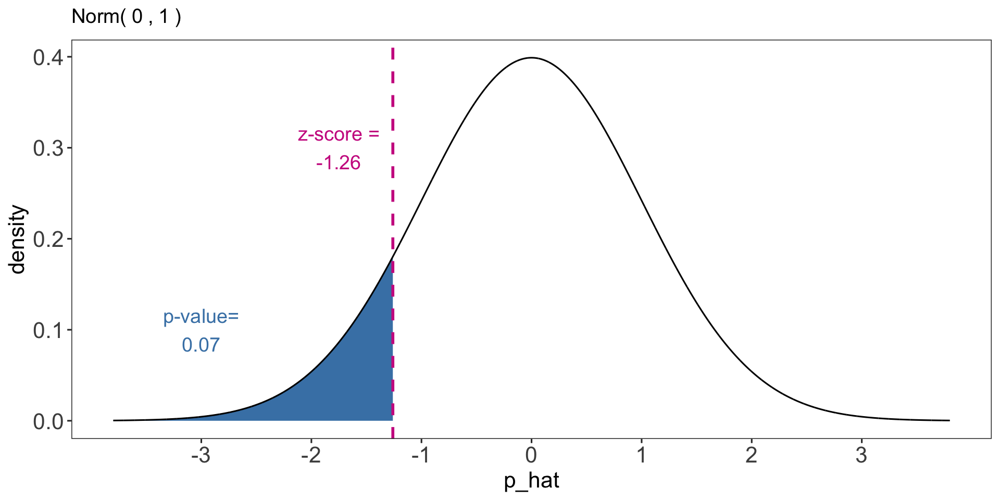
“Z-Score” P-Value: \(P( Z \leq -1.26)\)
Z-Scores: Why?
Takeaway: To find the p-value, we could either:
Use our Null Distribution and observed statistic, OR
Use a Standard Normal Distribution and the Z-Score (i.e., standardized observed statistic)
- Q: Why would I ever use z-scores? (Any ideas?)
- Only need probabilities/areas under curves for one distribution (i.e., Standard Normal). This was very helpful before computers.
- Useful to consider Z-Scores for Inference for One Mean
- Z-Scores are very related to “Critical Values” for general standard-error method confidence intervals
Confidence Intervals: Critical Values
Sampling Distribution: For a sample proportion, we know, \[\hat p \sim \text{Normal}\Big(\ \text{Mean} = p, \ \mathrm{SE} = \sqrt{\frac{p(1-p)}{n}}\ \Big)\] For Sampling Distribution, we plug in \(\hat{p}=0.40\) for \(p\) (i.e., the statistic) \[\hat{p} \sim \text{Normal}\Big(\text{Mean} = \color{red}{0.40},\ \mathrm{SE} = \sqrt{\frac{\color{red}{0.40}(1-\color{red}{0.40})}{40}}\Big)\]
Calculate 90% Confidence Interval:
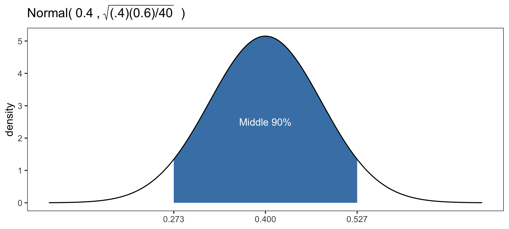
\[ \begin{aligned} (&0.273, \ 0.527) \\ &= 0.4 \pm 0.127 \\ &= 0.4 \pm \frac{0.127}{\sqrt{\frac{0.4*0.6}{40}}}\sqrt{\frac{0.4*0.6}{40}} \\ &= \underbrace{0.4}_{\hat{p}} \pm \underbrace{1.639}_{z*}\times\underbrace{\sqrt{\frac{0.4*0.6}{40}}}_{\text{SE}} \end{aligned} \]
- \(z^*\) is the standardized distance from the center of our sampling distribution to the 0.95 (or 0.05) quantile.
Confidence Intervals using Critical Values
\[ \textbf{Sampling Distribution:} \ \ \ \ \ \hat{p} \sim \text{Normal}\Big(\text{Mean} = 0.4,\ \mathrm{SE} = \sqrt{\frac{0.4(0.6)}{40}}\Big) \]
\[ \textbf{90% Confidence Interval:} \ \ \ \ \ \underbrace{0.4}_{\hat{p}} \pm \underbrace{1.639}_{z*}\times\underbrace{\sqrt{\frac{0.4*0.6}{40}}}_{\text{SE}} \]
This is a standard-error method confidence interval!
But now for 90% confidence instead of the usual 95% (where \(z^{*} = 2\)).
Why do we use \(z^{*} = 1.639\)? It gives the middle 90% in a Standard Normal!
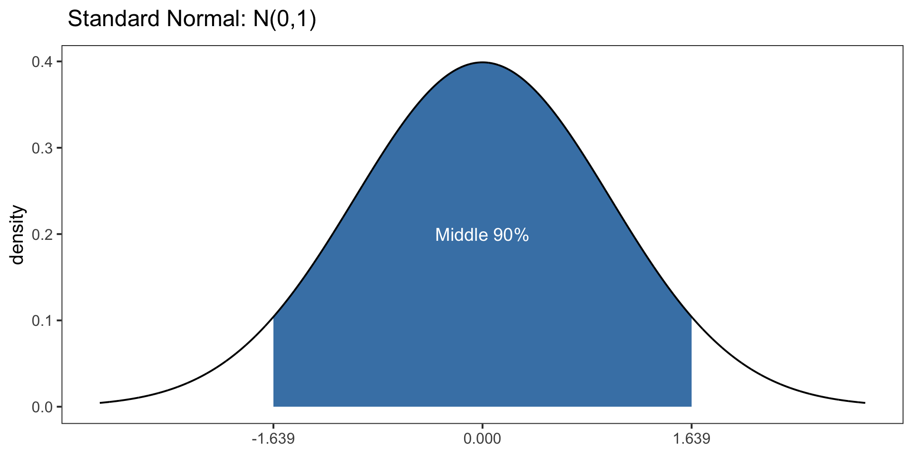
Theoretical Standard-Error Method Confidence Intervals
Theoretical Standard-Error Method Confidence Intervals: When a sample statistic is approximately Normally distributed, a standard-error method \(C\)% confidence interval is \[\textrm{Sample Statistic} \pm z^* \times SE\] where
- \(z^*\) is the critical value: the \((\frac{100+C}{2})\)th percentile of a standard Normal distribution.
- SE is the standard error of the theoretical sampling distribution
e.g., For \(\color{blue}{95\%}\), we want \(z^{*} =(\frac{100+\color{blue}{95}}{2})\text{th} = 97.5\)th percentile of Standard Normal
e.g., For \(\color{orange}{80\%}\), we want \(z^{*} = (\frac{100+\color{orange}{80}}{2})\text{th} = 90\)th percentile of Standard Normal
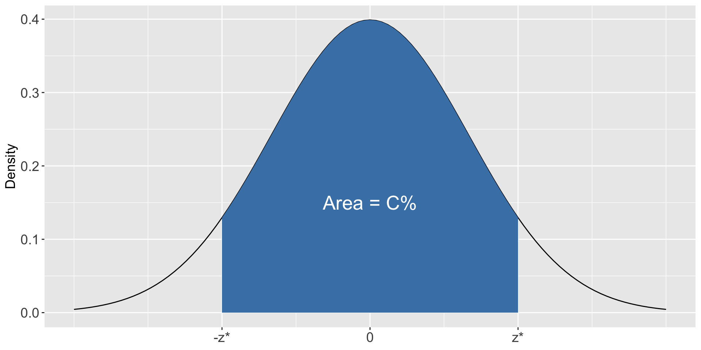
Inference on a Single Mean
Inference on a Single Mean
Today, we’ll study inference on a single mean, \(\mu\)
“Single Means” come up all the time in the real world:
- e.g., Average hours of sleep Reed students get
- e.g., Average time it takes to complete a marathon
- e.g., Average weight of cheese blocks made at a Tillamook factory
To answer these questions, we’ll use our similar procedures from before.
- … but we need to derive a new sampling distribution!
Distribution of Sample Means
When interested in inference on a population mean \(\mu\), we often use a sample mean \(\bar{x}\).
By the CLT, the distribution of \(\bar{x}\) is, \[ \color{red}{\bar{x} \approx \text{Normal}\Big(\mathrm{Mean} = \mu, \ \ \mathrm{SE} =\frac{\sigma}{\sqrt{n}}\Big) }\] where
\(n\) is the sample size
\(\sigma\) is the population standard deviation
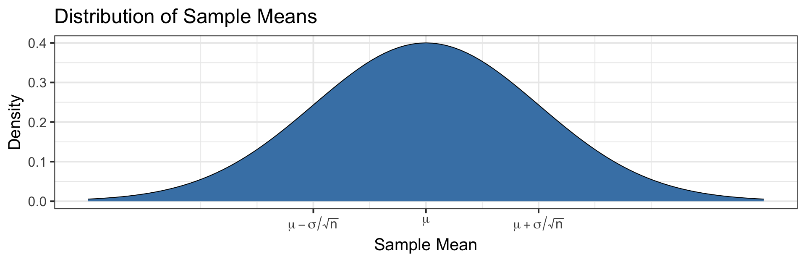
Example
Ex: We’re interested in average weight of cheese blocks at a Tillamook factory.
Population: Cheese blocks at a Tillamook factory
Parameter: \(\mu=\)Average weight of cheese blocks at the Tillamook factory.
Sample: SRS of \(n=15\) cheese blocks
Statistic: \(\bar{x}\) = 16.5 (average weight of \(n=15\) blocks in sample)
For Hypothesis Tests and Confidence Intervals, we’ll use that:
\[ \begin{align*} \color{red}{\bar{x} \approx \text{Normal}\big(\text{Mean} = \mu,\quad \text{SE}=\frac{\sigma}{\sqrt{n}} \big)} \end{align*} \]
where \(\sigma\) is the standard deviation of the cheese block weights in the population
Discuss with Partner(s): We’re going to need to “fill in” the unknown parameters (\(\mu\) and \(\sigma\)) in the above distribution.
For confidence intervals, what will we “plug in” for \(\mu\)?
For hypothesis tests, what will we “plug in” for \(\mu\)?
What should we “plug in” for \(\sigma\)?
Example
\[ \begin{align*} \bar{x} \approx \text{Normal}\big(\text{Mean} = \mu,\quad \text{SE}=\frac{\sigma}{\sqrt{n}} \big) \end{align*} \]
- For confidence intervals, what will we “plug in” for \(\mu\)?
- \(\bar{x}\) (the statistic)
- For hypothesis tests, what will we “plug in” for \(\mu\)?
- The “null-value” (e.g., \(\mu_0\)) that we assume in \(H_0\),
\[ H_0: \mu = \mu_0 \]
- What should we “plug in” for \(\sigma\)?
- Let’s estimate \(\sigma\) using the sample standard deviation, \(\color{red}s\)
\[ \color{red}{s=\sqrt{\frac{1}{n-1} \sum_{i=1}^n (x_i - \bar{x})^2}} \]
Notice that we had to use \(\bar{x}\) to estimate \(\sigma\)…
It turns out, with all this “estimating”, our distribution is not Normal anymore…
The \(t\)-distribution
Instead, \(\bar{x}\), after standardizing, follows a \(t\)-distribution
Like the standard Normal distribution, a \(t\)-distribution is symmetric, single-peaked, bell-shaped and centered at \(0\).
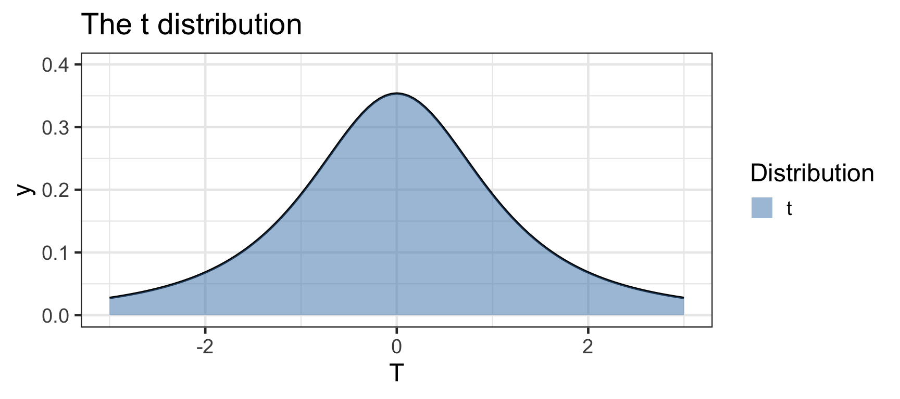
- But the \(t\)-distribution has heavier tails than the Normal distribution.
The \(t\)-distribution
Instead, \(\bar{x}\), after standardizing, follows a \(t\)-distribution
Like the standard Normal distribution, a \(t\)-distribution is symmetric, single-peaked, bell-shaped and centered at \(0\).
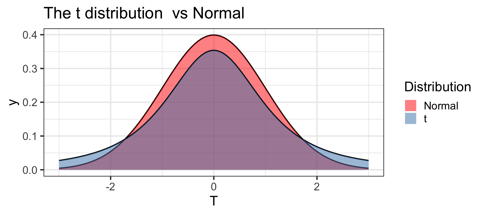
- But the \(t\)-distribution has heavier tails than the Normal distribution
Q: What does this imply about extreme values in the \(t\)-distribution?
- They’re more likely in the \(t\)-distribution than in the normal distribution!
Degrees of Freedom
The \(t\)-distribution is actually a family of distributions, defined by the parameter Degrees of Freedom (\(df\))
The degrees of freedom \(df\) determines the heaviness of tails \[ \text{lower df}\implies\text{heavier tails} \quad \quad \text{higher df}\implies\text{lighter tails} \quad \]
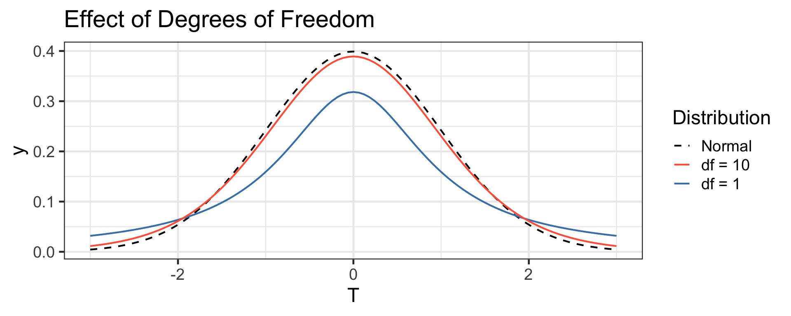
\(t\) distribution gets closer to the Normal distribution as degrees of freedom increases
For \(df \geq 30\), the \(t\) distribution is nearly indistinguishable from a Normal
Distribution of Sample Means using \(t\)-distribution
- Reminder: \(\bar{x}\) follows a \(t\)-distribution “after standardizing”
- i.e., \(\bar{x}\) follows a \(t\)-distribution after turning it into a “\(Z\)-Score”!
- By the CLT, \[ \bar{x} \approx \text{Normal}\Big(\text{Mean}=\mu, \ \ \text{SE}=\frac{\sigma}{\sqrt{n}}\Big) \]
- Then, the standardized statistic \(\color{red}{\frac{\bar{x}-\mu}{s/\sqrt{n}}}\) is approximately \(t\)-distributed with \(n-1\) degrees of freedom
\[ \color{red}{\frac{\bar{x}-\mu}{s/\sqrt{n}}} \sim t\big(\text{df}= n-1\big) \]
where \(s\) is the sample standard deviation.
Distribution of Sample Means using \(t\)-distribution
Theorem: Distribution of (Standardized) Sample Mean
Suppose a simple random sample of size \(n\) is drawn from a population with mean \(\mu\) and standard deviation \(\sigma\). Let \(\bar{x}\) be the sample mean, and let \(s\) be the sample standard deviation. Then, the standardized statistic \(\frac{\bar{x}-\mu}{s/\sqrt{n}}\) is approximately \(t\)-distributed with \(n-1\) degrees of freedom
\[ \frac{\bar{x}-\mu}{s/\sqrt{n}} \sim t\big(\text{df}= n-1\big) \]
whenever one of the following conditions holds:
- \(n\geq 30\), or
- The population distribution is approximately Normal.
Big Takeaway: We will be doing:
The “Z-Score Way” of calculating Hypothesis Test P-Values
The Standard-Error Method of calculating Confidence Intervals
but we use the \(t\)-distribution (with \(df=n-1\)) for (i) probabilities, and (ii) critical values
Implications: Heavier Tails
Hypothesis Tests: the “Z-Score Way” of calculating P-Values, but use \(t\)-distribution (with \(df=n-1\)) for probabilities (instead of standard normal)
Confidence Intervals: the Standard-Error Method, but use \(t\)-distribution (with \(df=n-1\)) for critical values (instead of standard normal)
Reminder: The \(t\)-distribution has heavier tails than the Normal distribution
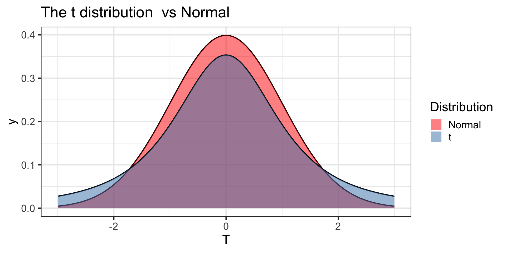
Discuss with Neighbors: What are the implications of the heavier tails for:
calculating P-Values (i.e., are they bigger, smaller, or the same?)
calculating Confidence Intervals (i.e., are they wider, narrower, or the same?)
Implications: Heavier Tails
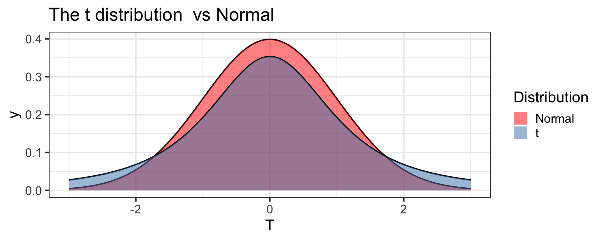
- Implications for P-Values?
- They get bigger! (i.e., harder to reject \(H_0\))
- Implications for Confidence Intervals?
- They get wider! (i.e., more uncertainty)
- Q: What is the intuition for this?
- Reminder: We’re using the \(t\)-distribution because we had one extra parameter we needed to estimate: \(\sigma\) (population SD)
- When we estimate \(\sigma\) with \(s\) (sample SD), we gain uncertainty!
Implications: Sample Size
Hypothesis Tests: the “Z-Score Way” of calculating P-Values, but use \(t\)-distribution (with \(df=n-1\)) for probabilities (instead of standard normal)
Confidence Intervals: the Standard-Error Method, but use \(t\)-distribution (with \(df=n-1\)) for critical values (instead of standard normal)
Reminder: In a \(t\)-distribution,
Lower degrees of freedom (\(df\)) \(\implies\) heavier tails
Get closer to the Normal distribution as degrees of freedom increases

Discuss with Neighbor(s): What does this imply about using the \(t\)-distribution versus the standard normal distribution as \(n\) increases? Does this make sense intuitively?
Implications: Sample Size
- What does this imply about using the \(t\)-distribution versus the standard normal distribution as \(n\) increases?
- The difference becomes negligible!
- They would give about the same P-Values and Confidence Intervals when \(n\) is large.
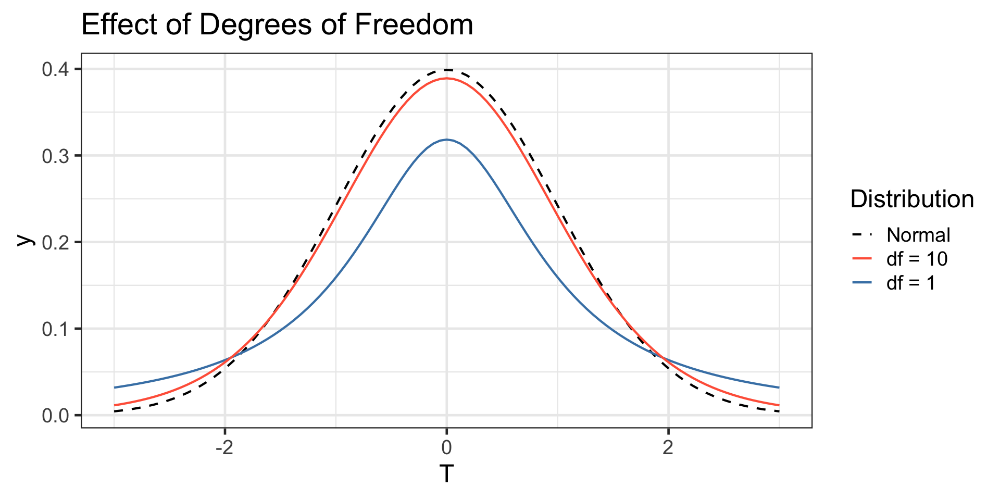
- Does this make sense intuitively?
- When our sample is large, we expect \(s\) to be a good estimate of \(\sigma\)!
- While we have to estimate an extra parameter \(\sigma\), our estimate \(s\) is so good that it’s essentially like we’re using the true value of \(\sigma\).
Next time
- Theory-based inference for difference-in-means
- Activity